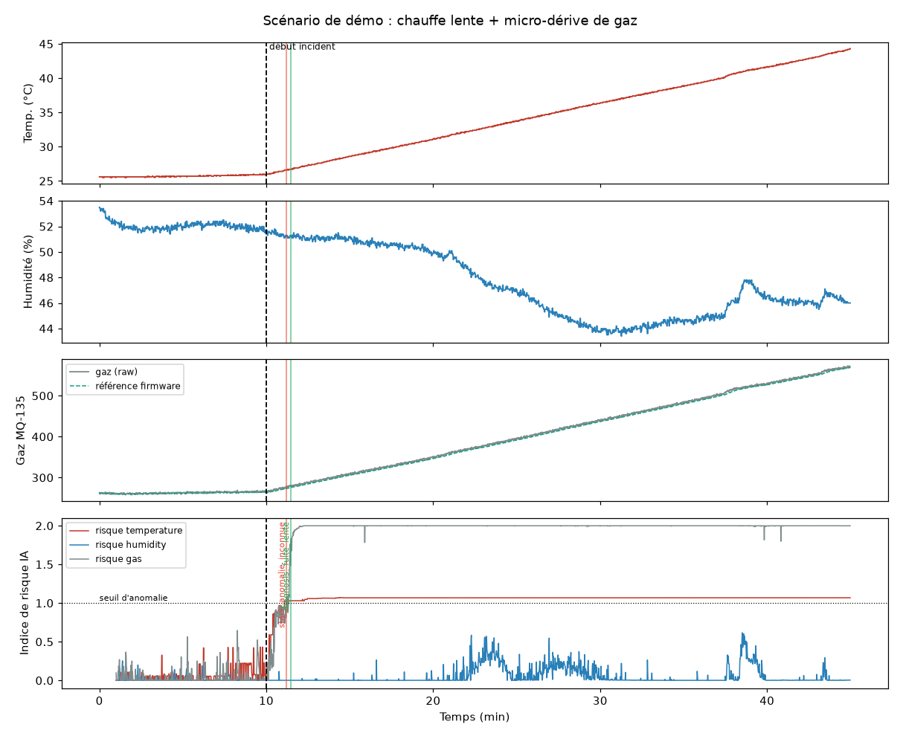

La couverture n'est pas numérotée. Le poster A3 (annexe A) est la dernière page du dossier.
AetherCorp exploite des micro-centrales isolées, exposées à trois menaces : cyberattaques, intrusions physiques et risques environnementaux (fuite de gaz, surchauffe). Sentinel-X est le boîtier de surveillance autonome qui répond aux trois, relié de façon chiffrée à un centre de commandement.
Nous avons choisi une topologie distribuée « Edge-to-Server », variante de l'option B du sujet. Le rôle de PC Serveur Local est réparti sur des machines virtuelles Proxmox segmentées en 4 VLAN. Ce choix apporte la haute disponibilité de la base, la supervision et l'automatisation.
La webcam USB est remplacée par la caméra du robot humanoïde Yanshee. Le robot sert à la fois de capteur vidéo mobile et d'actionneur de dissuasion. Cette variante a été validée par les coachs.
Tous les échanges décisionnels passent par le broker Mosquitto, sur TLS. La vidéo, trop lourde pour MQTT, circule en MJPEG direct.
| # | Flux | Protocole | Protection |
|---|---|---|---|
| 1 | ESP8266 → Mosquitto : mesures 1 Hz, statut (Last Will) | MQTT/TLS 8883 | CA embarqué, chaîne vérifiée, authentification |
| 2 | Mosquitto → API : ingestion | MQTT/TLS 8883 | Authentification broker |
| 3 | API → Galera : stockage | SQL 3306 via VIP HAProxy | Utilisateur applicatif, VLAN 20 isolé |
| 4 | Dashboard ↔ API : lecture et temps réel | HTTPS + WSS | Reverse proxy TLS |
| 5 | Dashboard → API → Mosquitto → ESP8266 : buzzer, LED | HTTPS puis MQTTS | Journal d'audit de chaque commande |
| 6 | IA prédictive → API : alertes ia_anomaly | HTTPS POST /api/v1/alerts | Jeton API |
| 7 | Robot → IA vision : vidéo 640×480, 25 i/s | MJPEG HTTP 8000 | Clé API X-API-KEY |
| 8 | IA vision → Mosquitto → API et robot : détections, photo, riposte | MQTT/TLS 8883 | CA et nom d'hôte vérifiés |
L'infrastructure est segmentée en quatre VLAN de 62 hôtes. Chaque fonction est isolée, ce qui limite la propagation d'une compromission et rend la matrice des flux explicite.
Infra (ports, réseau, IP).xlsx ; tout port absent de la matrice est fermé par UFW (politique deny).| VLAN | Réseau | Passerelle |
|---|---|---|
| 10 · WEB | 172.16.137.0/26 | 172.16.137.1 |
| 20 · INFRA | 172.16.137.64/26 | 172.16.137.65 |
| 30 · SUPERVISION | 172.16.137.128/26 | 172.16.137.129 |
| 40 · AUTOMATISATION | 172.16.137.192/26 | 172.16.137.193 |
| Machine | IP |
|---|---|
| WORKSHOP-GRP7-BDD1 / 2 / 3 | 172.16.137.1 / .2 / .3 |
| WORKSHOP-GRP7-BrockerMosquitto | 172.16.137.4 |
| WORKSHOP-GRP7-APIDev | 172.16.137.5 |
| WORKSHOP-GRP7-YOLO | 172.16.137.6 |
| WORKSHOP-GRP7-Ansible | 172.16.137.7 |
| WORKSHOP-GRP7-Zabbix | 172.16.137.8 |
| VIP HAProxy | 172.16.137.10 |
| Machine | Ports entrants | Usage |
|---|---|---|
| Mosquitto | 22, 8883, 9001, 80/443, 10050 | SSH, MQTTS, MQTT WebSocket, supervision |
| API + dashboard | 22, 443, 8080, 10050 | SSH, dashboard HTTPS, API REST + WebSocket |
| IA YOLO | 22, 8080, 10050 | SSH, flux annoté MJPEG |
| Galera (×3) | 22, 3306, 4567, 4568, 4444, 10050 | SSH, MariaDB, réplication Galera |
| Zabbix | 22, 443, 10051 | SSH, interface web, trapper |
| Ansible | 22 | SSH |
Carte NodeMCU ESP8266 (clone Lolin V3, puce USB CH340). Les broches de démarrage D3, D4 et D8 sont laissées libres : un module qui les tire au mauvais niveau empêche le flashage. C'est pour cela que l'OLED est sur D6/D7 en I2C logiciel.
| Élément | Broche | GPIO | Alim. | Remarque |
|---|---|---|---|---|
| Buzzer actif | D0 | 16 | — | HIGH = son |
| LED rouge | D1 | 5 | — | Résistance 220 Ω en série |
| DHT22 (DATA) | D2 | 4 | 3,3 V | Pull-up 10 kΩ entre VCC et DATA |
| PIR HC-SR501 (OUT) | D5 | 14 | 5 V | Sortie 3,3 V, branchement direct |
| OLED SCL / SDA | D6 / D7 | 12 / 13 | 3,3 V | I2C logiciel (U8g2) |
| MQ-135 (AO) | A0 | ADC | 5 V | Pont diviseur 10 kΩ / 20 kΩ |
Le sujet mentionne un MQ-2. Le boîtier utilise un MQ-135 (gaz et fumées), même brochage analogique et même logique de détection relative.
C++ sous PlatformIO (Arduino), environ 450 lignes. La boucle principale ne contient aucun delay() : chaque tâche a sa propre cadence. Les capteurs tournent donc même sans réseau, et les commandes reçues sont appliquées immédiatement.
| Tâche | Cadence |
|---|---|
| Lecture DHT22 (valeurs hors plage rejetées) | 2 s |
| Échantillon gaz, moyenne glissante | 100 ms |
| Niveau gaz (référence adaptative) | 1 s |
| PIR (après 30 s de calibration) | continu |
| Publication MQTT | 1 s |
| Rafraîchissement OLED | 500 ms |
| Reconnexion broker | 5 s |
mqtt_ca.h, et la chaîne est vérifiée à chaque connexion.secrets.h, exclu du dépôt ; un modèle secrets.example.h est fourni.offline sur sentinelx/esp-01/status si le boîtier disparaît. Le tableau de bord détecte donc une coupure sans attendre.Le capteur ne donne pas une concentration absolue. Le firmware mesure donc l'écart à l'air calme : après 60 s de chauffe, il mémorise une référence qui suit ensuite la dérive lente du capteur, mais reste figée en alerte pour ne pas absorber une vraie fuite.
| Niveau | Condition | Sortie de niveau |
|---|---|---|
normal | écart ≤ 150 | — |
eleve | écart > 150 | redescendre sous 120 (hystérésis de 30) |
alerte | écart > 300 | redescendre sous 270 |
Ces seuils sont un premier rempart local, rapide sur une fuite franche. Leur limite (une dérive lente est absorbée par la référence) est justement ce que traite l'IA prédictive (section 08).
// Télémétrie, toutes les secondes : sentinelx/esp-01/telemetry
{"device":"esp-01","uptime_s":742,"temperature":24.6,"humidity":48.2,
"gas":{"raw":312,"baseline":290,"level":"normal"},"presence":false,"rssi":-61,
"actuators":{"buzzer":"off","led":"off"}}
// Commande : sentinelx/esp-01/cmd
{"target":"all","state":"on","duration_ms":3000}
En mode alerte, le firmware fait clignoter buzzer et LED en phase (0,5 s allumé, 0,5 s éteint). Avec duration_ms, l'alarme s'arrête seule. Le boîtier ne déclenche aucune alarme de lui-même : la décision appartient au centre de commandement.
L'API (Python, FastAPI, asynchrone) centralise les métriques et l'historique des événements. Elle ingère MQTT, écrit dans Galera et pousse chaque événement au dashboard par WebSocket.
| Méthode | Route | Rôle |
|---|---|---|
| POST | /api/v1/alerts | Imposé par le sujet. Réception des alertes capteurs et IA, validation stricte du schéma (201, 422) |
| GET | /api/v1/alerts | Alertes récentes, filtres par niveau, source, acquittement |
| PUT | /api/v1/alerts/{id}/acknowledge | Acquittement par le superviseur (jeton requis) |
| GET | /api/v1/measurements | Historique pour les courbes |
| GET | /api/v1/status | État du broker, de la base, des boîtiers et de l'IA |
| POST | /api/v1/commands | Commande buzzer, LED ou robot, relayée en MQTT (QoS 1) et journalisée |
| GET | /api/v1/commands | Journal d'audit des commandes |
| POST | /api/v1/auth/login | Obtention du jeton |
| GET | /api/v1/camera/stream, /photos | Flux vidéo relayé, photos d'intrusion stockées en base |
| WS | /ws | Événements temps réel : telemetry, alert, anomaly, person_count, photo, robot_action |
| Topic | Sens | Contenu |
|---|---|---|
sentinelx/esp-01/telemetry | ESP → serveur | Mesures JSON, 1 par seconde |
sentinelx/esp-01/status | ESP → serveur | online / offline (retained, Last Will) |
sentinelx/esp-01/cmd | serveur → ESP | {"target":"buzzer|led|all","state":"on|off|toggle","duration_ms":3000} |
sentinelx/esp-01/anomaly | IA → API | Indice de risque par capteur, diagnostic |
detection_robot/person_count, /photo, /timestamp | YOLO → API | Nombre de personnes, JPEG de preuve, horodatage |
detection_robot/command | YOLO / API → robot | {"cmd":"punch","dry_run":false} |
detection_robot/action_status | robot → API | executing / completed |
| Table | Contenu |
|---|---|
telemetry | Mesure horodatée : température, humidité, gaz (brut, référence, niveau), présence, RSSI, état des actionneurs |
alerts | Source (sensor, ia_vision, ia_anomaly), type, niveau, message, payload, acquittement |
actuator_audit | Qui a déclenché quoi, quand, avec quel payload |
captured_photos | Photo d'intrusion (base64), nombre de personnes |
python:3.11-slim, Docker Compose avec restart: unless-stopped et healthcheck sur /health. Les secrets sont lus depuis un .env hors dépôt ; Compose refuse de démarrer s'ils manquent. 13 tests automatisés (pytest) couvrent alertes, actionneurs et télémétrie.React 19, Vite et Recharts. Le dashboard charge l'historique au démarrage puis se met à jour uniquement par WebSocket, ce qui le rend réactif sans interroger l'API en boucle.
POST /api/v1/commands, une publication MQTT vers sentinelx/esp-01/cmd et une ligne d'audit.sources/img/dashboard.png)Script Python autonome (yanshi_video.py) sur la VM IA. Il lit le flux MJPEG de la caméra du robot, détecte les personnes avec YOLO et publie les événements sur le broker.
| Paramètre | Valeur | Pourquoi |
|---|---|---|
| Modèle | YOLO26n (Ultralytics), variante « nano » | Le plus léger de la famille, adapté à une inférence CPU temps réel |
| Classe | COCO 0 (person) uniquement | Seule la présence humaine compte, le reste est filtré à l'inférence |
| Taille d'entrée | 640 px (imgsz=640) | Redimensionnement en amont, exigé par le sujet |
| Source | 640×480, 25 i/s, encodé par le GPU du robot | Aucune charge processeur côté robot |
| Seuil de confiance | 0,40 | Compromis entre fausses détections et intrus manqués |
| Photo de preuve | au plus 1 toutes les 10 s | Ne pas saturer le broker |
| Riposte du robot | au plus 1 toutes les 5 s | Anti-rebond |
Caméra Yanshee ─MJPEG─► YOLO26n ─┬─► MQTTS person_count ─► API ─► alerte d'intrusion
├─► MQTTS photo (JPEG) ─► API ─► Galera + galerie
├─► MQTTS command ─► robot (riposte)
└─► HTTP :8080 /stream.mjpg (flux annoté, clé API)
detection_robot/action_status. Le mode dry_run permet de tester sans solliciter les servos.result.speed["inference"] d'Ultralytics) : ____ ms en moyenne.Le sujet interdit les simples conditions du type if temp > 40. Notre module apprend le comportement normal de chaque capteur et détecte une dérive avant qu'elle n'atteigne un seuil critique. Aucune décision ne repose sur une valeur de capteur codée à la main.
En rejouant exactement la logique gaz du firmware en Python (firmware_gas.py), nous avons constaté deux angles morts :
normal pendant toute la fuite.normal alors qu'elle continue.Le firmware n'a par ailleurs aucune alerte de température.
Features, calculées chaque seconde sur un tampon glissant : valeur, écart à la médiane sur 5 min, vitesse de variation, écart-type sur 10 s, et un écart à une référence long terme qui redescend vite mais ne remonte qu'en une heure. Cette mémoire longue permet de voir un incident que le firmware a absorbé.
Décision : indice de risque normalisé (1 = seuil appris sur des données normales de validation, calé pour 0,05 % de secondes faussement anormales). Alerte après 8 s consécutives au-dessus de 1, diagnostic confirmé après 8 s stables, retour à la normale après 20 s sous 1.
Évalués sur des données inédites pour le modèle, avec exactement la logique du service temps réel. 20 tirages par scénario, valeurs médianes.
| Scénario | Détection IA | Diagnostic correct | Firmware | Avance sur le seuil critique |
|---|---|---|---|---|
| Surchauffe lente (+0,3 à 0,8 °C/min) | 71 s | 20/20 | jamais | 22 min |
| Fuite de gaz lente (+5 à 20 /min) | 61 s | 20/20 | jamais | 9 min |
| Fuite de gaz franche | 7 s (critical) | 20/20 | 4 s | — (firmware 3 s plus rapide) |
| Hausse d'humidité (+6 à 35 %) | 15 s | 19/20 | jamais | — |
| Démo : chauffe lente + micro-dérive de gaz | 99 s | 20/20 | jamais | 18 min |

data_take.py puis train.py).anomaly_service.py s'abonne à sentinelx/+/telemetry. Il publie chaque seconde l'indice de risque sur sentinelx/<device>/anomaly (affiché en jauge sur le dashboard) et envoie les alertes en POST /api/v1/alerts, avec la source ia_anomaly. Une simulation publiée sur le broker sert de démo de secours si le boîtier tombe en panne.
Toute la pile serveur tourne sur l'hyperviseur Proxmox de l'école, en conteneurs LXC et machines virtuelles, déployée et supervisée de façon centralisée.
bdd, galerabootstrap, replica1, replica2, zabbix, zabbixagent. Secrets dans vault.yml, à chiffrer avec ansible-vault, jamais versionnés.Zabbix 7.0 (PostgreSQL, nginx), déployé par Ansible ainsi que les agents sur toutes les machines : les 3 nœuds Galera, le broker, l'API, la VM IA et Ansible. Il suit le CPU, la mémoire, le disque et la disponibilité, ce qui répond à l'exigence de maintien en condition opérationnelle face à l'afflux continu de messages MQTT.
sources/img/zabbix.png)Mesures de sécurité en place, et comment les prouver devant le jury.
| Flux | Mesure | Preuve | État |
|---|---|---|---|
| ESP8266 → Mosquitto | MQTT exclusivement sur TLS 8883, CA embarqué, chaîne du broker vérifiée | Wireshark : trafic illisible | En place |
| IA vision → Mosquitto | TLS, vérification du CA et du nom d'hôte | MQTT_TLS_INSECURE=false | En place |
| API et robot → Mosquitto | MQTT sur TLS 8883 | Wireshark | En place |
| Dashboard ↔ API | HTTPS et WSS derrière reverse proxy | Cadenas du navigateur | En place |
| Exigence | Mesure | Preuve | État |
|---|---|---|---|
| Fermeture des ports non requis | UFW, politique deny par défaut, ports limités à la matrice §03 | sudo ufw status verbose | En place |
| SSH sans mot de passe | Clés asymétriques personnelles, PasswordAuthentication no | sudo sshd -T | grep passwordauth | En place |
| Segmentation réseau | 4 VLAN, base de données isolée derrière une VIP | Schéma §03 | En place |
| Isolation des services | Services en conteneurs Docker sans --privileged, une VM par fonction | docker inspect | En place |
| Haute disponibilité | Galera 3 nœuds, HAProxy, restart: unless-stopped, healthcheck | Arrêt d'un nœud en direct | En place |
| Supervision (MCO) | Zabbix sur toutes les machines : CPU, RAM, disque, disponibilité | Tableau de bord Zabbix | En place |
| Élément | Mesure | Preuve | État |
|---|---|---|---|
| Broker MQTT | Authentification obligatoire, aucune connexion anonyme | mosquitto.conf | En place |
| API : actions du superviseur | Acquittement des alertes protégé par jeton Bearer ou X-API-Key, délivré par /api/v1/auth/login | 401 sans jeton | En place |
| Flux vidéo et API du robot | Clé API obligatoire ; les services refusent de démarrer sans clé | 401 sans clé | En place |
| Secrets | Aucun secret dans le dépôt : .env, secrets.h et vault.yml hors dépôt, modèles *.example | git grep sans résultat | En place |
| Traçabilité | Chaque commande d'actionneur journalisée (qui, quoi, quand) | GET /api/v1/commands | En place |
Le rapport se compose de deux parties : un auto-audit du code et de la configuration, mené le 8 octobre avant le pentest croisé, et les résultats du pentest croisé de l'après-midi.
git grep).| ID | Constat | Correctif | État |
|---|---|---|---|
| A-01 | Le boîtier pouvait encore se connecter au broker en clair (1883). | Firmware en MQTT exclusivement sur TLS 8883, avec CA embarqué et vérification de la chaîne. | Corrigé |
| A-02 | Identifiants présents dans des fichiers versionnés. | Secrets sortis du dépôt (.env, secrets.h, vault.yml), modèles *.example, .gitignore étendu. | Corrigé |
| A-03 | Des services du robot démarraient avec une clé API par défaut. | Clé obligatoire : sans SENTINEL_API_KEY, les services refusent de démarrer. | Corrigé |
| A-04 | Docker Compose démarrait l'API avec des valeurs de secours. | Compose exige désormais chaque secret et refuse de démarrer s'il manque. | Corrigé |
| A-05 | Le dashboard affichait le flux brut du robot. | L'API relaie le flux annoté par YOLO, avec le flux du robot en repli. | Corrigé |
Conduit l'après-midi avec Nmap, Wireshark et Metasploit. Attaques visées par le sujet : homme du milieu, injection de payloads, déni de service.
| Heure | Groupe | Outil / technique | Cible | Résultat | Détectée ? |
|---|---|---|---|---|---|
| Heure | Groupe cible | Outil / technique | Cible | Résultat | Succès ? |
|---|---|---|---|---|---|
| ID | Vulnérabilité exploitée | Correctif appliqué | État |
|---|---|---|---|
Coque modélisée sous Fusion360, imprimée sur Creality K2 Plus. Cahier des charges : encapsuler l'ESP8266 et les capteurs, laisser apparaître l'écran OLED, ménager des passe-câbles propres sans fil apparent, et ventiler le capteur de gaz (qui chauffe) et le DHT22 pour garder des mesures fidèles.
Creality Falcon A1 : logo AetherCorp, consignes de sécurité et numéro de série du module, pour donner au boîtier l'aspect d'un produit fini.
| Temps | Séquence |
|---|---|
| 0 – 10 s | Hook métier : la menace sur les centrales, ambiance d'alerte |
| 10 – 30 s | Le produit : gros plans du boîtier imprimé et gravé, OLED et capteurs |
| 30 – 50 s | La pile technique en incrustation fond vert : schémas, code, vision IA isolant un intrus |
| 50 – 60 s | Outro : « Sentinel-X : la sécurité à la bordure. » |
Format livré : MP4 vertical 1080×1920 (9:16), H.264, 60 s maximum.
feat(...), fix(...)).| Jour | Réalisations |
|---|---|
| Lundi 5 | Constitution de l'équipe, architecture et flux, contrat d'interface, plan d'adressage, VM et accès SSH |
| Mardi 6 | Câblage, firmware, Mosquitto, Galera par Ansible, API, premières mesures réelles, entraînement IA |
| Mercredi 7 | Intégration de bout en bout, dashboard temps réel, IA sur le flux vidéo, commandes à distance, robot, tournage du teaser |
| Jeudi 8 | MQTT exclusivement sur TLS, retrait des secrets, auto-audit, pentest croisé, livrables |